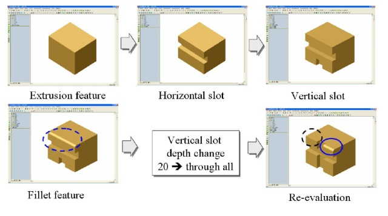

Esta plantilla es la directriz para un proyecto de desarrollo de FreeCAD. Sigue las reglas de la metodología GTD Getting Things Done (GTD)|. Los proyectos se recopilan en el mapa de desarrollo.
Propósito y principios
Este es un esfuerzo de desarrollo y diseño para implementar un sistema robusto de designación topológica en FreeCAD.
Resultado
- Interfaz en (Part::TopoShape) para referenciar de forma robusta (nombre) formas y subformas (caras, aristas, vértices) a través de una cadena de texto (nombrar los subelementos como "Face1")
Aquí necesitamos una interfaz que proporcione a Part::TopoShape toda la información necesaria para realizar el nombrado, por ejemplo, NewShape, información adicional de un algoritmo como el borrado de caras, paso de modelado (para 2.) y ......
- Asociación de los pasos de modelado con las caras/aristas resultantes.
En el caso de un modelo muy grande el usuario está perdido si tiene cientos de redondeos o taladros. De modo que si las caras/aristas supieran en que paso del modelado se han creado podríamos implementar que el doble clic en las caras/aristas abriera la operación correspondiente!
- Un algoritmo para mantener el nombrado estable a través de los cambios en el historial del modelo, como la división de aristas/caras y el desplazamiento de vértices

- (opcional) estructura de datos optimizada en memoria para mantener sólo las caras/aristas modificadas en cada operación de modelado. Esto será importante cuando el modelo sea grande. No es eficiente copiar la mayor parte de la forma, sería mucho más eficiente compartir las aristas/caras que no han cambiado entre operaciones y copiar sólo lo que ha cambiado.
Tormenta de ideas
Se ha discutido bastante en el post "Robust Reference" de jrheinlaender.
Otros
Literatura & documentación
- J Kripac, "Un mecanismo para la designación topológica persistente de entidades en modelos sólidos paramétricos basados en historial"
- Describe para realizar el primero de los tres puntos de la lista. Podría decirse que es el modo de designación utilizado en Catia y OCC. Por lo menos la interfaz parece la misma. El documento no está disponible para descargar. Tuve que comprarlo. Si alguien está interesado se lo puedo enviar por email.
- Interesante acercamiento a través de estructuras gráficas, trata el punto cuatro de la lista por la reutilización de caras/aristas no modificadas.
- Muy buena visión general y ejemplos
- y algunos más a añádir....
Summary of Work To-Date
As of June 13th, 2016, here is a summary of the work that has been done for this project:
- jrheinlaender produced a lot of code in 2012 that relies heavily on the Sketch workbench for resolving "Robust References"
- ickby had taken a stab at incorporating some or jrheinlaender's code into modern freecad. This post has a link to his github repo.
- In 2016, ezzieyguywuf revived jrheinlaender's thread and subsequently started his own. You can see it here
- ezzieyguywuf developed a "light weight" opencascade program for duplicating the Topological Naming issue and for testing potential solutions. See his github repo here
- ezzieyguywuf incorporated the opencascade TNaming toolkit into his test code, and showed how this could help resolve some of the Topological Naming issues. See the github repo
Organización
- opencascade's TNaming relies upon the TDF_Data data framework.
- TDF_Data is a key component of the opencascade OCAF thing, but can be used independent of it
- TDF_Data is essentially a tree in which data is added and then read at a later date
- Whenever a TNaming_NamedShape attribute is added to a node on the TDF_Data tree, a TNaming_UsedShapes attribute is added to the root of the tree
- NOTE: this TNaming_UsedShapes attribute is critical to the utility of the TNaming toolkit. It contains a history of all the TopoDS_Shape used during the 'history' of the part
- TNaming_Builder is used to add information to the TDF_Data tree. It adds a TNaming_NamedShape to a given node on the tree, as well as updating the TNaming_UsedShapes database as necessary.
- Any time the TopoDS_Shape is changed, it must be logged in the TDF_Data structure
- Again, TNaming_Builder is used for this
- See here in the opencascade documentation for a table listing what must be stored in the database. NOTE: this table appears to be incomplete. Some additional testing may need to be done
- In short, any time the TopoDS_Shape is modified, any modified/generated/deleted features must be logged. For the most part, since we're dealing with solids, this means we must log the modified/generated/deleted Faces on the solid
- The TNaming_Selector class is used to "select" a feature that is being tracked on the TDF_Data tree
- a "selected" feature is one that opencascade's TNaming algorithm will maintain a constant reference to, regardless of topological changes
Siguientes acciones
- Definición del alcance
- Casos de prueba de Python
- Interfaz en Part::TopoShape (+ vinculación con Python)
Next Steps (as of June 13th, 2016)
- Determine if opencascade TNaming toolkit fully resolves Topological Naming issue in FreeCAD
- What are all instances where Topological Naming is a problem?
- What are complex scenarios where this approach will need to work?
- Incorporate TNaming code into FreeCAD
- Start with a bare-bones approach, i.e. Make a Cube and a Cylinder, Fuse, Fillet, and then re-size the Cylinder. Fillet should not move
- Gradually add more functionality
- Determine if TNaming will be the solution long-term
- Whether or not TNaming is the long-term solution, figure out a way to 'serialize/deserialize' the data that TNaming uses for persistence across sessions
{kind=link}